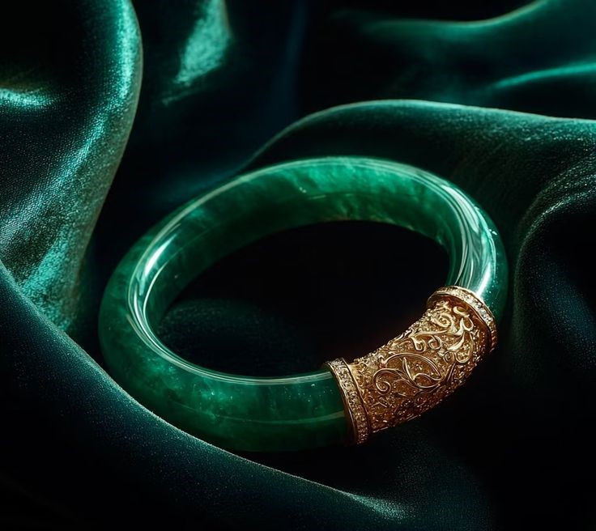
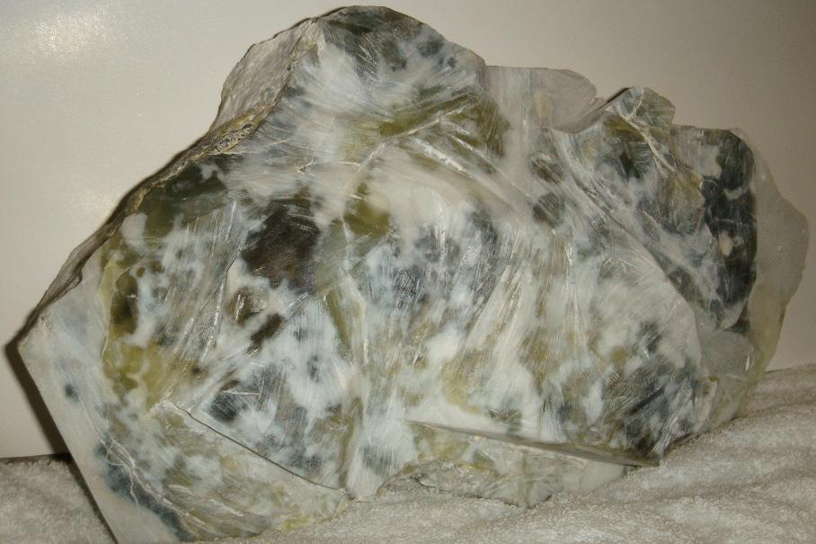

Crafted by Nature, Perfected by Culture
옥의 개념은 예로부터 엄격하게 정의되어 있지 않았다. 한자 문화권에서 ‘옥(玉)’이라 불리는 광물의 종류는 매우 다양하며 복잡하다. 일반적으로 아름다움, 단단함, 그리고 온화하고 부드러운 질감을 지닌 광물이라면 모두 옥으로 불릴 수 있다. 옥은 중국 문화에서 매우 중요한 의미를 지녀 왔으며, 액운을 막고 사악한 기운을 물리치며 진위를 판별하는 힘이 있다고 여겨졌다. 이러한 이유로 고대에는 제사 의식에 사용되는 예기(禮器)나 신분과 권위를 상징하는 장식품으로 자주 제작되었고, 황제의 인장 또한 옥으로 새겨 만들어졌다. 현대에 이르러서도 옥은 장식품을 넘어 평안과 행운을 기원하는 부적으로 몸에 지니는 문화가 이어지고 있다.

비취 옥 팔찌

미가공 남전옥(藍田玉) 원석
옥의 종류가 매우 다양하기 때문에 광물학, 역사학, 고고학에서는 각각 서로 다른 분류 기준이 존재한다. 또한 중국 문화권에서 말하는 ‘아름다운 돌(石之美者)’이라는 개념까지 더해지면서, 광물학을 제외한 옥의 분류 체계는 복잡하고 모호하며 그 종류 또한 매우 방대해졌다. 이러한 분류의 혼란을 해결하기 위해 사회적으로 다양한 분류 방식이 제안되었다. 예를 들어, ‘옥’을 광물학적 의미로 한정하고, 사문석·수암옥·남전옥 등 전통적으로 옥으로 여겨졌던 광물들은 ‘옥석(玉石)’이라는 범주에 포함시키는 방식이 있다. 또한 연옥(軟玉)을 협의와 광의로 구분하기도 하는데, 협의의 연옥은 투섬석과 양기석 등을 주성분으로 하는 광물을 의미하며, 광의의 연옥은 전통 문화 속에서 옥으로 인식된 모든 광물의 집합을 뜻한다. 한편 어떤 견해에서는 연옥을 신장의 화전옥(和田玉)만으로 한정하고, 그 외의 재료는 모두 ‘전통 옥 재료’로 분류하기도 한다. 이처럼 옥의 정의와 분류 방식은 시대와 관점에 따라 매우 다양하게 존재하고 있다.